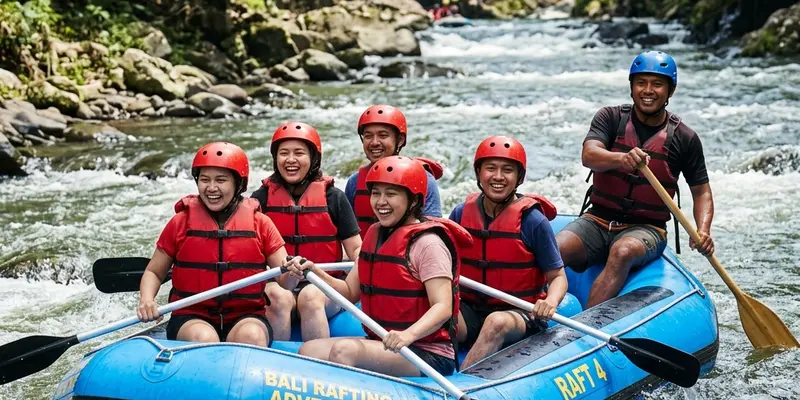

Rafting Malang sering dibandingkan wisatawan dengan operator besar seperti Songa Adventure karena perbedaan lokasi, karakteristik sungai, serta reputasi yang telah lebih dulu dikenal luas di kalangan wisatawan arung jeram Jawa Timur.
Ringkasan Inti
- Rafting Malang umumnya merujuk pada aktivitas arung jeram di sungai-sungai sekitar Kota dan Kabupaten Malang.
- Songa Adventure adalah operator rafting yang beroperasi di Sungai Pekalen, Probolinggo, dengan rute sekitar 12 kilometer.
- Perbedaan lokasi ini membuat waktu tempuh dan karakteristik arus rafting Malang dan Songa berbeda.
- Reputasi dan pengalaman operator besar seperti Songa sering menjadi acuan pembanding bagi wisatawan.
- Memilih vendor rafting sebaiknya mempertimbangkan lokasi, pengalaman, dan kebutuhan rombongan secara spesifik.
Apa Itu Rafting Malang dan Bagaimana Karakteristiknya?
Rafting Malang adalah aktivitas arung jeram yang diselenggarakan di berbagai sungai kawasan Malang Raya, seperti Sungai Brantas di kawasan Batu, yang menawarkan pengalaman arus deras dan pemandangan alam khas dataran tinggi Jawa Timur.
Berbeda dengan operator yang berlokasi jauh dari pusat kota, rafting Malang umumnya lebih mudah dijangkau bagi wisatawan yang sedang berlibur di kawasan Kota Batu maupun Kota Malang, sehingga menjadi pilihan praktis tanpa perlu menempuh perjalanan jauh ke luar kota.
Apa Itu Songa Adventure dan Di Mana Lokasinya?
Songa Adventure adalah operator rafting yang beroperasi di Sungai Pekalen, dengan titik keberangkatan di kawasan Desa Gending, Kabupaten Probolinggo, Jawa Timur. Operator ini dikenal luas di kalangan wisatawan domestik maupun mancanegara sebagai salah satu penyedia jasa rafting yang telah beroperasi cukup lama di Jawa Timur.
Rute rafting yang ditawarkan Songa Adventure di Sungai Pekalen memiliki panjang sekitar 12 kilometer dengan tingkat kesulitan yang oleh sebagian ulasan wisatawan disebut berada pada grade dua hingga tiga, serta melewati pemandangan air terjun dan gua kelelawar di sepanjang jalur pengarungan.
Mengapa Wisatawan Sering Membandingkan Rafting Malang dengan Songa Adventure?
Wisatawan sering membandingkan rafting Malang dengan Songa Adventure karena Songa telah lebih dulu dikenal luas melalui ulasan wisatawan dan reputasi sebagai salah satu operator rafting besar di Jawa Timur, sehingga sering dijadikan acuan standar kualitas layanan rafting.
Perbandingan ini juga muncul karena wisatawan ingin mengetahui apakah pilihan rafting yang lebih dekat dengan lokasi mereka, seperti rafting Malang, dapat memberikan pengalaman yang sebanding dengan operator besar yang sudah memiliki nama, sebelum akhirnya memutuskan menggunakan jasa vendor lokal atau menempuh perjalanan lebih jauh ke Probolinggo.
Apa Perbedaan Karakteristik Rafting Malang dan Rafting Songa?
Perbedaan karakteristik rafting Malang dan rafting Songa terletak pada lokasi sungai, jarak tempuh dari pusat kota, serta profil arus yang dilalui, di mana Songa beroperasi di Sungai Pekalen Probolinggo sementara rafting Malang umumnya memanfaatkan sungai di sekitar kawasan Batu dan Malang Raya.
Dari sisi waktu tempuh, wisatawan yang berada di kawasan Malang atau Surabaya umumnya membutuhkan perjalanan sekitar beberapa jam untuk mencapai lokasi Songa Adventure di Probolinggo, sementara rafting Malang dapat menjadi opsi yang lebih dekat bagi wisatawan yang ingin menghemat waktu perjalanan tanpa mengorbankan pengalaman arung jeram.

Perbandingan jalur pengarungan dan atmosfer petualangan arung jeram di kawasan Jawa Timur.
Apa Manfaat Memilih Rafting Malang Dibanding Operator di Luar Kota?
Manfaat memilih rafting Malang dibanding operator di luar kota meliputi waktu tempuh yang lebih singkat, kemudahan menggabungkan aktivitas rafting dengan destinasi wisata lain di kawasan Batu dan Malang, serta fleksibilitas jadwal yang lebih mudah diatur karena jarak yang lebih dekat.
Manfaat lain yang umum dirasakan wisatawan yang memilih rafting Malang:
- Menghemat waktu perjalanan dibanding harus menempuh jarak lebih jauh ke Probolinggo.
- Memudahkan penggabungan itinerary dengan destinasi wisata lain di Kota Batu.
- Mendukung vendor lokal yang lebih memahami kebutuhan wisatawan di kawasan Malang Raya.
Bagaimana Cara Memilih Vendor Rafting yang Sesuai Kebutuhan Rombongan?
Cara memilih vendor rafting yang sesuai kebutuhan rombongan adalah dengan mempertimbangkan lokasi yang paling efisien dari sisi waktu tempuh, pengalaman vendor dalam menangani rombongan, serta kejelasan standar keselamatan yang diterapkan selama kegiatan berlangsung.
Bagi rombongan korporat maupun keluarga yang ingin menggabungkan rafting dengan kegiatan outbound lain, penyelenggara seperti Gemilang Katon Outbound umumnya dapat membantu mengatur paket rafting Malang sekaligus aktivitas team building tambahan sesuai kebutuhan acara.
Apa Faktor yang Perlu Dipertimbangkan Sebelum Memilih Antara Rafting Malang dan Songa Adventure?
Faktor yang perlu dipertimbangkan sebelum memilih antara rafting Malang dan Songa Adventure meliputi jarak tempuh dari titik keberangkatan wisatawan, anggaran waktu yang tersedia, serta preferensi terhadap karakteristik arus dan pemandangan yang ditawarkan masing-masing lokasi.
Wisatawan yang memiliki waktu terbatas dan berada di kawasan Malang Raya umumnya lebih diuntungkan dengan memilih rafting Malang, sementara wisatawan yang memang berencana menjelajahi kawasan Probolinggo sekaligus dapat mempertimbangkan Songa Adventure sebagai bagian dari itinerary perjalanan yang lebih luas.
Apa Kesalahan Umum saat Membandingkan Operator Rafting?
Kesalahan umum yang sering terjadi adalah hanya membandingkan popularitas atau nama besar operator tanpa mempertimbangkan faktor jarak, waktu tempuh, dan kesesuaian dengan kebutuhan spesifik rombongan yang akan melakukan rafting.
Kesalahan lain yang juga umum ditemui:
- Tidak memeriksa detail rute dan tingkat kesulitan sebelum membandingkan dua operator berbeda.
- Mengabaikan faktor biaya transportasi tambahan menuju lokasi yang lebih jauh.
- Tidak mempertimbangkan pengalaman vendor lokal yang mungkin lebih memahami kebutuhan rombongan setempat.
Bagaimana Vendor Outbound Dapat Membantu Menentukan Pilihan Rafting yang Tepat?
Vendor outbound dapat membantu menentukan pilihan rafting yang tepat dengan memberikan rekomendasi lokasi sesuai anggaran waktu dan kebutuhan rombongan, termasuk mengatur logistik perjalanan apabila rombongan tetap memilih lokasi yang lebih jauh seperti Probolinggo.
Penyelenggara seperti Gemilang Katon Outbound umumnya dapat membantu membandingkan opsi rafting Malang dengan operator lain, sekaligus menyusun paket kegiatan tambahan yang sesuai dengan tujuan acara, baik untuk keperluan rekreasi keluarga maupun team building perusahaan.
Kesimpulan Praktis
Wisatawan membandingkan rafting Malang dengan operator besar seperti Songa Adventure terutama karena faktor reputasi, lokasi, dan karakteristik arus yang berbeda antara Sungai Pekalen di Probolinggo dan sungai-sungai di kawasan Malang Raya. Mempertimbangkan jarak tempuh, anggaran waktu, dan kebutuhan rombongan akan membantu wisatawan menentukan pilihan yang paling sesuai, baik memilih rafting Malang yang lebih dekat maupun tetap mempertimbangkan Songa Adventure sebagai bagian dari perjalanan yang lebih luas. Untuk pembahasan lebih rinci, silakan simak profil lengkap rafting Songa Adventure, perbandingan mendalam antara Songa Adventure dan opsi lokal, serta tips memilih vendor outbound rafting yang tepat pada artikel-artikel pendukung berikut.
Pertanyaan yang Sering Diajukan
Rafting Malang adalah aktivitas arung jeram yang diselenggarakan di sungai-sungai kawasan Malang Raya, seperti Sungai Brantas di Batu.
Songa Adventure berlokasi di Sungai Pekalen, dengan titik keberangkatan di Desa Gending, Kabupaten Probolinggo, Jawa Timur.
Songa Adventure sering dijadikan pembanding karena reputasinya yang sudah dikenal luas melalui ulasan wisatawan sebagai salah satu operator rafting besar di Jawa Timur.
Ya, bagi wisatawan yang berada di kawasan Malang Raya, rafting Malang umumnya lebih dekat dan menghemat waktu tempuh dibanding harus menuju Probolinggo.
Pilihan sebaiknya mempertimbangkan jarak tempuh, anggaran waktu, dan preferensi terhadap karakteristik arus serta pemandangan masing-masing lokasi.